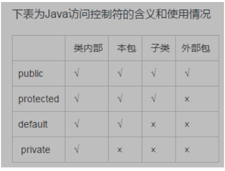
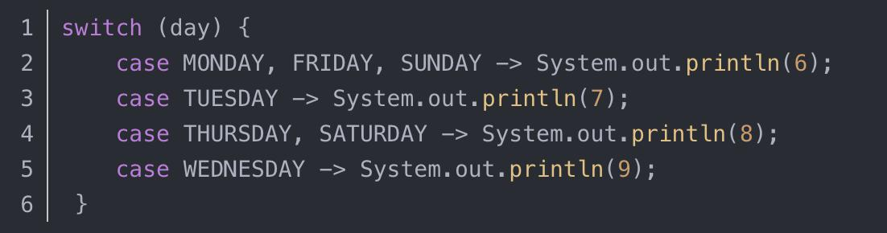
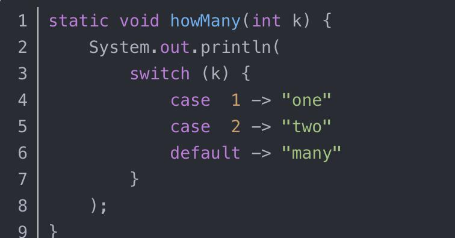
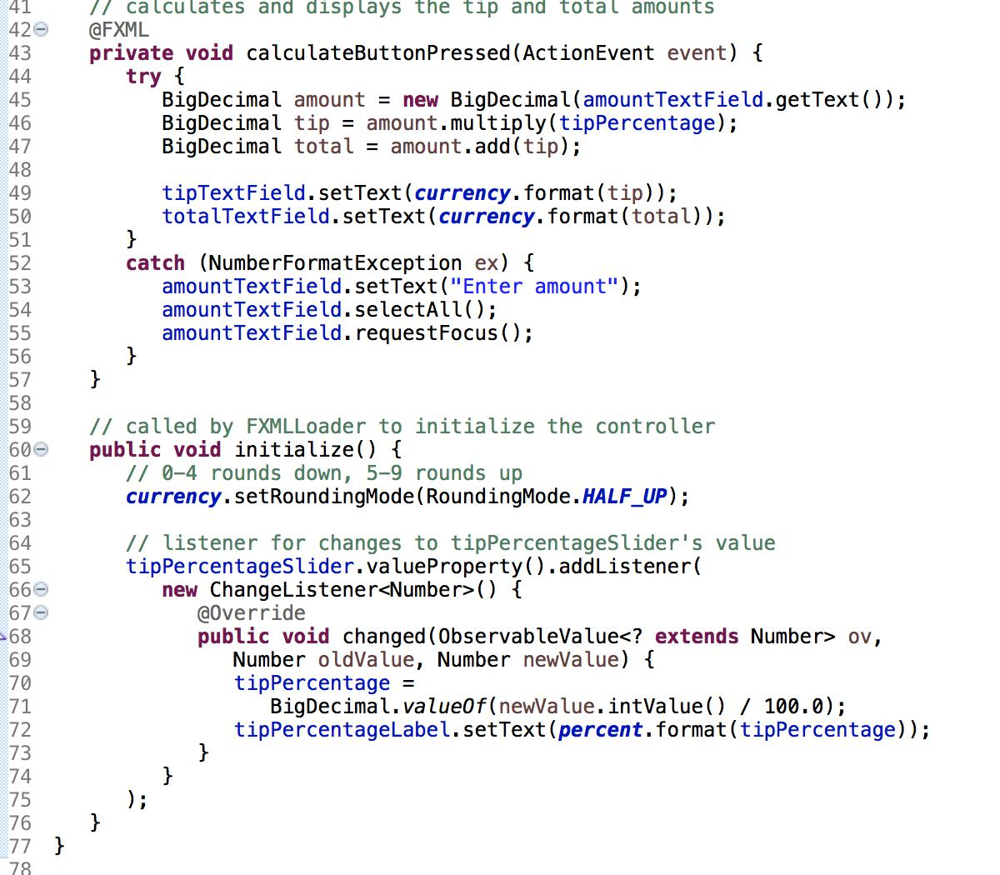
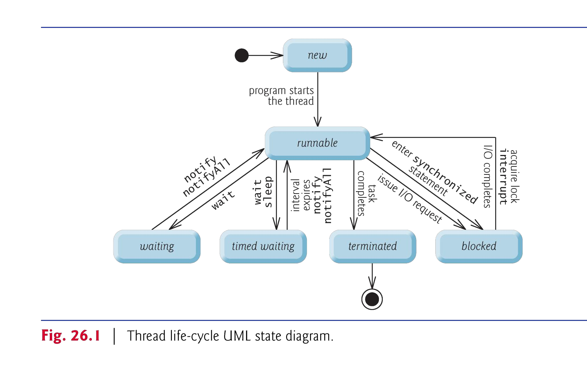

Java期末复习
1、Java的特性有哪些？（至少写五种）
答：（1）简单的（Simple）
（2）强壮的（Robustness）
（3）面向对象的
（4）高性能的
（5）多线程的
（6）安全的
2、Java程序经历的五个阶段
答：（1）编辑（Edit）
（2）编译（Compile）
（3）加载（Load）：将程序加载到内存中
（4）验证（Verify）：验证字节码
（5）执行（Execute）
3、使用命令行测试Java应用程序
先cd到文件夹下，然后javac test.java
然后发现文件夹下有了一个.class文件
之后再 java test ，则会运行程序
4、Java SDK的三种版本：J2SE、J2ME、J2EE
5、写main函数
1 | public static void main(String args[]) |
6、使用输入输出语句
1 | import java.util.Scanner; |
注意，Scanner需要包来导入，但是OutputStream它是java.lang包的一部分，不在程序开始时随导入声明一起导入
7、Java的基本类型
boolean、byte、char、short、int、long、float、double
8、标识符（Identifier)
由字母，数字，下划线(_)和**美元符号($)**组成的一系列字符，不以数字开头，不包含空格。
9、基本内存概念
Garbage Collection（自动垃圾回收）
Java采用一种不同的，很方便的方法：Garbage Collection。垃圾回收机制放在JVM里。JVM完全负责垃圾回收事宜，应用只在需要时申请空间，而在抛弃对象时不必关心空间回收问题，不受个人控制。
可以通过调用库方法：System.gc()，对JVM进行请求，使垃圾回收操作容易发生
当对象即将被销毁时，有时需要做一些善后工作，可以把这些操作写在**finalize()**方法中
1 | protected void finalize() |
10、实例变量和局部变量⭐️
（1）实例变量：声明在类声明中，但是在类方法的主体之外的非静态变量
eg：
1 | public class Test |
创建类的对象时，其实例变量默认初始化
（2）局部变量：局部变量不会自动初始化，必须要先初始化再使用
11、基本类型和引用类型（Primitive /reference Type）
(1) 基本类型：boolean, byte, char, short, int, long, float, double
(2) 引用类型：所有非基本类型，默认值为null
①程序使用引用类型的变量来存储对象在计算机内存中的位置，称为引用一个对象
②当使用另一个类的对象时，需要对该对象的引用来调用其方法（invoke its methods），也称为向对象发送信息
12、成员访问修饰符（Member access modifier）

除了private只能在类内部访问，其他三种都可以在同一个包下进行访问调用。
13、关于switch
类型可以为基本类型和ENUM，string，但是不能为float和double,在Java13中可以不写break


14、enhanced for-statement(冒号for循环)
不能修改，只能遍历
1 | String[] str = { |
15、静态方法和字段
（1）静态变量：被static修饰的成员,被类的所有对象所共享
（2）静态方法：只能调用其他静态方法，不能直接调用非静态成员
16、final 表示常量⭐️
必须在使用之前初始化，且以后不能修改
final类不能被继承，方法不能被重写，变量赋值不能被修改。
17、Math
Math类也在java.lang包下，不需要导包
18、在方法之间传递信息：值传递
19、method overloading（方法重载）
（1）对象：在同一类声明的同名方法
（2）要求：必须有不同的参数集
（3）区分：通过不同的参数个数进行区分
（4）特点：返回类型可相同可不同，但参数列表必须不同。
对比：method overriding：
重写是子类对父类的允许访问的方法的实现过程进行重新编写, 返回值和形参都不能改变。
20、可变长度的参数列表
1 | private static double sum(double... ds) |
(1) 参数类型后面跟着省略号（…）表示该方法接收到该类型的可变数量的参数
(2) 只能在参数列表的末尾发生一次。
21、封装与数据隐藏
问题：为什么用private的get、set方法？
适当的封装可以让程式码更容易理解与维护，也加强了程式码的安全性。
封装的概念：
在面向对象程式设计方法中，封装（英语：Encapsulation）是指一种将抽象性函式接口的实现细节部分包装、隐藏起来的方法。
22、this：是对象访问对自身的引用
1）用在构造函数中第一句中 来调用其他的构造函数
2）当字段名与局部变量名重名时用来区分
3）内部类中需要调用外部类时
23、String.format
格式化字符串，注意不输出，只是将它格式化（老师多次提到
1 | System.out.println(String.format("%d\t%s", 1,"hehe")); |
24、组合（composition） 和继承 如何选择？
组合的耦合度更小 继承耦合紧密 建议选用组合 但看具体情况（继承——动态绑定）
25、枚举类
里面都是常量，用大写，逗号分开
enum不能用new来创建
1 | public enum Book { |
使用方法：
1 | public static void main(String[] args) { |
26、super
同名时，采用super.name调用父类方法
27、抽象类、接口和具体类的区别？
抽象类不能被实例化，只能被继承
接口是对于将公共功能分配给可能不相关的类
接口的变量为public static final类型，方法只能被public（默认）和protected修饰
具体类：可以用来实例化对象的类称为具体类，提供了它们声明的每个方法的实现。
28、instance of
用来测试一个对象是否为一个类的实例
boolean result=obj instanceof Class
其中 obj 为一个对象，Class 表示一个类或者一个接口，当 obj 为 Class 的对象，或者是其直接或间接子类，或者是其接口的实现类，结果result 都返回 true，否则返回false。
29、Throw throws二者区别？
1 | public static void test()throws NumberFormatException |
Throws表示出现异常的一种可能性，不一定发生这些异常；throw如果执行，一定抛出异常
30、Checked exceptions和unchecked exceptions
(1) unchecked exceptions：类RuntimeException(java.lang包)的直接或间接子类，即运行异常
① 通常是由程序代码中的缺陷引起的
② 编译器不检查代码以确定未检查的异常是否被捕获或声明。这些通常可以通过适当的编码来防止。不需要在方法的抛出子句中列出unchecked exceptions。
(2) checked exceptions：Exception的子类但不是RuntimeException，如I/O Exception，即编译错误
① 由不在程序控制范围内的条件引起
② 编译器检查每个方法调用和方法声明，以确定该方法是否抛出checked exceptions。如果是，编译器将验证选中的异常是否被catch或在throws子句中声明。如果未满足catch或declare要求，编译器将发出一条错误消息，指示必须捕获或声明异常。
31、listener

32、String与StringBuilder
String 是final类，不能修改，每次修改都要重新创建对象；
StringBuilder能改善，在同一对象上执行
用法：
1 | StringBuilder sb = new StringBuilder("hello world!"); |
33、常用的正则表达式
34、流的分类
字符流：文本文件：Reader、Writer
和字节流：二进制文件：InputStream OutputStream
35、Paths类：Paths类提供静态方法，用于获取表示文件或目录位置的Path对象
1 | Path path = Paths.get(input.nextLine()); |
36、Collection集合接口的一些方法
1 | //List and set |
1 | //Map |
37、什么是函数式接口？
只有一个抽象方法的接口
什么是函数式编程？
把函数的特性应用于编程语言中，是面向行为的编程。
38、lambda表达式
表示匿名方法，用于实现函数接口的简写表示法，类似于匿名内部类。由后跟箭头标记（->）的参数列表和正文组成
39、泛型类，泛型方法
1 | public class Stack<T> |
40、关于通配符（Wildcards）
作用：不需要参数的精确类型信息时使用，代表了一种未知类型
41、如何创建线程？
1 | public class Test implements Runnable |
42、一个线程的生命周期

43、线程同步
1 | public synchronized void add() |
44、JDBC
1 | final String SELECT_QUERY="SELECT * FROM SC"; |
45、NetWork
Server端
1 | ServerSocket server=new ServerSocket(portNumber,queueLength); |
Client端
1 | Socket connection=new Socket(serverAddress,port); |
数据报：传输单个信息包，无连接，协议是UDP，不能保证传输顺序，可能丢包、重复
DatagramPacket用于发送和接收信息，DatagramSocket发送和接收数据包。
1 | socket=new DatagramSocket(5000); |